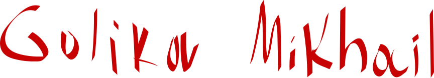

Мини-брендбук · Личный
2026 / V1
Михаил Голиков
 Руководство по фирменному стилю
Руководство по фирменному стилю
Я превращаю смысл в форму.
Меня зовут Михаил Голиков, я графический дизайнер. Работаю на стыке рукотворного жеста и строгой системы: беру живую, почти каллиграфическую энергию линии и собираю её в чёткую визуальную структуру.
Мой логотип — это подпись, написанная от руки. В ней — мой подход: характер важнее шаблона, а эмоция работает только тогда, когда стоит на твёрдом фундаменте сетки, контраста и ритма. Я делаю айдентику, постеры, типографику и арт-дирекшн — для тех, кому нужен голос, а не шум.
Логотипы, фирменные знаки, системы стиля и гайдлайны — от идеи до готового набора носителей.
Шрифтовые композиции, плакаты, обложки и леттеринг — там, где текст становится главным героем.
Визуальная концепция, съёмка, верстка и единый язык для кампаний, соцсетей и digital.
Основа айдентики — рукописный логотип-подпись. Это авторский знак: его нельзя набрать шрифтом, он узнаётся как личный автограф.
Основной — Ink на светлом
Выворотка — White на тёмном

Акцентный — Signal Red
На красном — White
Сокращённый знак «G» из логотипа — для аватаров, фавиконок, печатей и углов макета.
Ink
White
On Red
Свободное поле вокруг знака — не меньше высоты буквы «G». Минимальная ширина логотипа в цифре — 160 px, в печати — 28 мм.
Пунктир — граница охранного поля
Используйте логотип в трёх фирменных цветах: Ink, White, Signal Red.
Не перекрашивайте знак в посторонние цвета и градиенты.
Сохраняйте исходные пропорции и охранное поле.
Не сжимайте, не растягивайте и не наклоняйте логотип.
Размещайте на спокойном фоне с достаточным контрастом.
Не добавляйте тени, обводки и контуры к знаку.
Три фирменных цвета и два нейтральных. Базовая пара — чёрный и красный — несёт характер, бумага и белый дают воздух.
Рекомендуемое соотношение: 60% Ink · 20% Red · 20% Paper/White
Набор повторяемых элементов, который держит стиль узнаваемым на любом носителе.
Четыре бесшовных паттерна для фонов, упаковки, соцсетей и носителей. Каждый — отдельный SVG, который можно масштабировать без потери качества.
Как элементы работают вместе на реальных носителях.